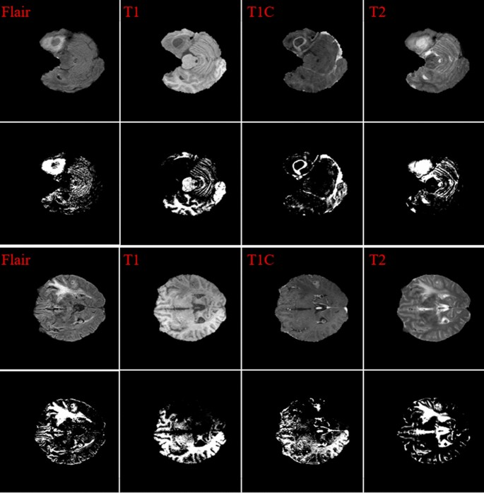
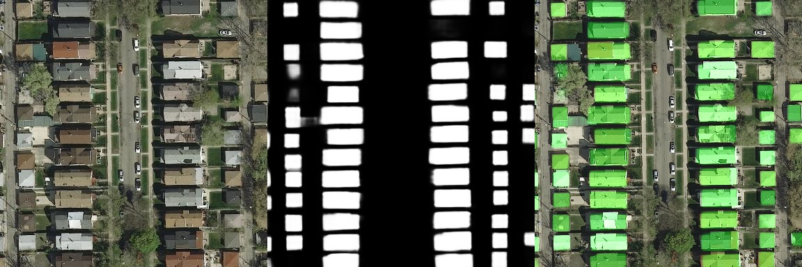
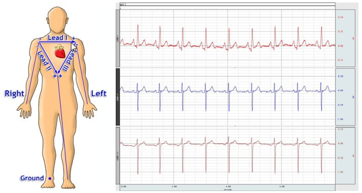
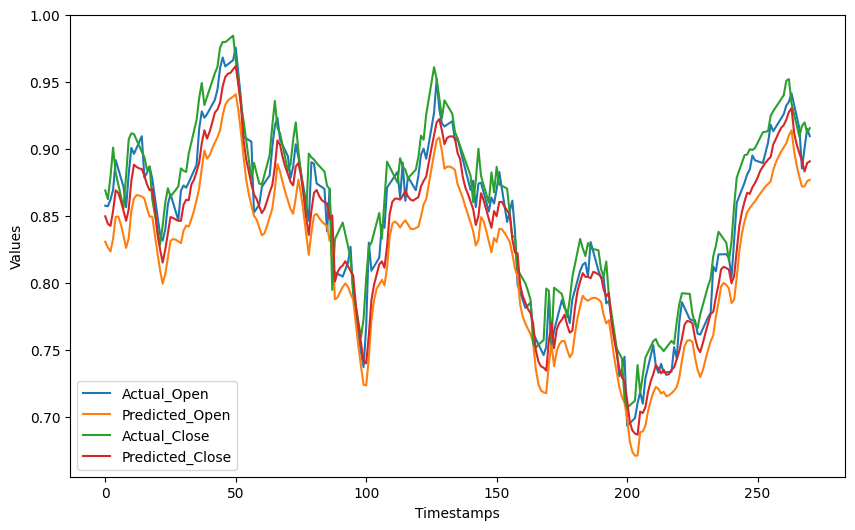
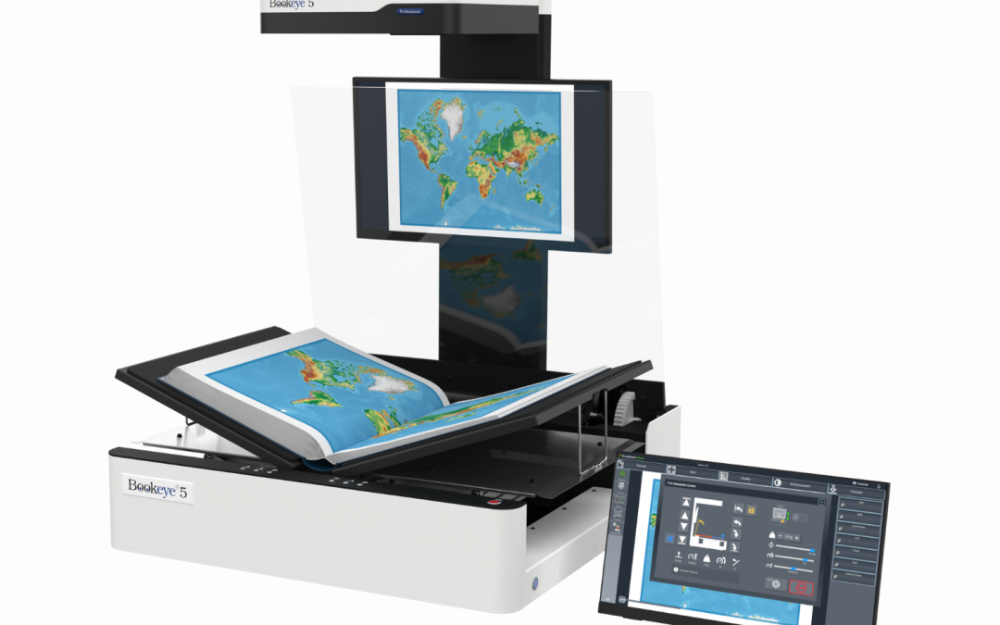
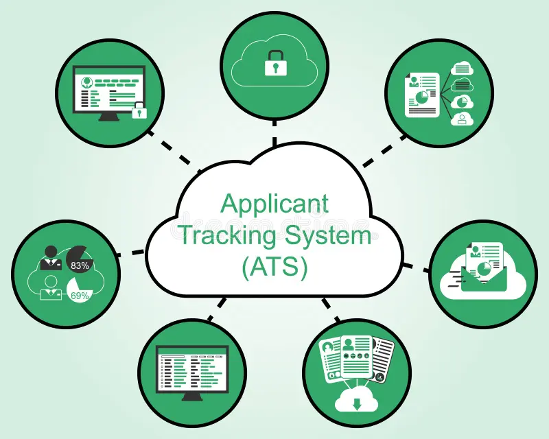
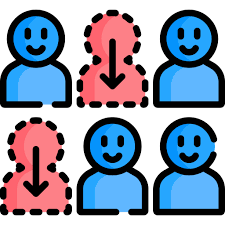
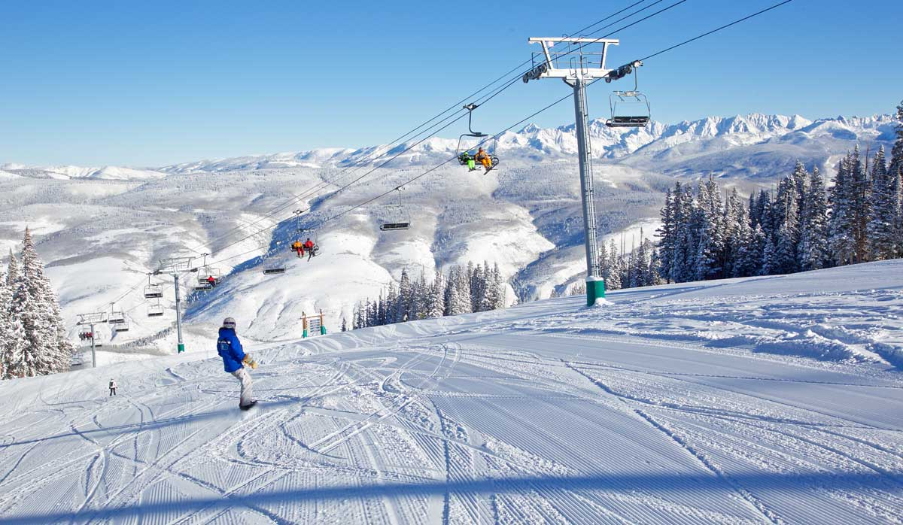

Portfolio Projects
Brain Tumor Detection Using Multiplanar MRI Fusion and YOLO-Based Model
- Designed a novel Mixture YOLO model to address cross-plane performance gaps in MRI tumor detection by integrating three SparK-RepViT backbones pretrained on axial, coronal and sagittal brain image slices.
- Implemented an adaptive router module to dynamically weight and fuse features from each plane-specific backbone, enabling the model to emphasize the most informative plane for each detection.
- Optimized model efficiency by freezing the three pretrained backbones, reducing trainable parameters from 217.6M to 55.5M while preserving specialized plane-wise representations.
- Achieved state-of-the-art results on axial MRI scans – 91.3% recall and 95.0% mAP@0.5 – surpassing the original baseline model on these metrics.
- Conducted ablation studies confirming that frozen backbones improve overall performance, boosting sagittal-plane detection by ~16.1% (mAP@0.5:0.95) compared to the unfrozen model.

Building Footprint Segmentation from Satellite Imagery
- Engineered a UNet semantic segmentation pipeline (using PyTorch, Solaris) to extract building footprints from satellite imagery for urban planning and disaster response simulations across diverse terrains/landscapes/regions.
- Implemented geometric and photometric data augmentations (flips, rotations, gaussian noise, blur) to combat domain shift, improving recall by ~6%, number of true positives (identified buildings) by ~5% and number of false negatives by 21%.

Reconstruction of 12-Lead ECG from Reduced Leads Using U-Net
- Achieved 0.846 mean correlation in reconstructing full 12-lead ECGs from reduced 3-lead inputs by developing a hybrid architecture that couples a 1D U-Net with deterministic physiological constraints (Einthoven’s Law).
- Reduced model complexity by ~58% (40.8M to 17.1M parameters) while improving accuracy, proving via ablation studies that a shared-decoder architecture provides superior regularization compared to lead-specific heads.
- Engineered a zero-parameter physics module to exactly compute 4 limb leads (III, aVR, aVL, aVF), effectively reducing the deep learning regression problem space by 44% and guaranteeing clinical validity for derived leads.
- Validated model performance on the PTB-XL dataset using rigorous patient-stratified cross-validation (18,885 patients), ensuring zero data leakage and reliable generalization to 1,900+ unseen patients in the test set.

Time Series Forecasting on Global Stock Prices
- Sourced stock price data from various global financial institutions over a 2 year period.
- Performed time series analysis on data to produce daily, weekly and monthly stock price predictions.
- Created investment strategies that made buy, sell and hold recommendations in response to market conditions using bollinger bands.
- Resulting models yielded profits up to 20% of initial investment and registered no losses when used on test data.
- Employed time-series processing techniques including ARIMA modelling, simple exponential smoothing, LSTMs, facebook prophet and rolling forecasts among others.

Image Recognition for Document Digitization
- Developed image prediction models to be used in tandem with software for manual, page-by-page digitization or scanning.
- Trained models to determine the endpoints between a page being fully displayed and a page that is being flipped to aid in accurate, legible scanning of book pages.
- Resulting models showed more than 90% accuracy with test data.
- Employed deep-learning image classification frameworks including ResNet and MobileNet.

Ranking of Potential Candidates using Job Postings
- Designed NLP models that take a hiring company’s job posting, analyze the job titles and job descriptions of potential candidates, then rank all candidates based on their similarity to the given job description.
- Created a web interface that allows the user/operator to select their preferred candidates then updates the model’s ranking of all viable candidates in real time based on the new information.
- Employed NLP techniques such as word embedding, sentence transformation, vectorization, variable encoding and cross validation.

Predicting Likelihood of Investment using Demographic Data
- Designed models to determine the likelihood of a customer investing in a bond/term deposit using the financial and demographic data of a banking institution.
- Resulting models yielded up to 88% accuracy in predicting likelihood of investment.
- Resulting models also highlighted the demographic/customer segment to target for future investment with regards to age, profession, marital status, bank balance, mortgage status and debt status.
Customer Satisfaction Prediction using Survey Data
- Sourced data from the customer surveys of a Logistics and Delivery business including timeliness of delivery, pricing, courier performance, ease of app use, missing contents and overall satisfaction among others.
- Designed prediction models that evaluated and predicted customer satisfaction (satisfied or unsatisfied) using the survey data.
- Resulting models yielded accuracy up to ~80% when tested and identified the key components of the business operations which were responsible for maximizing customer satisfaction and minimizing customer turnover/churn.

Ticket Price Analysis for Ski Resorts
- Sourced data from 330 ski resorts in the United States including ticket prices, skiable area, annual days of operation, location, mountain elevations, number of chairlifts/trams and snowfall among others.
- Designed prediction models that assessed the relationship between ticket prices (weekend, weekday, adult, child) and the different features, attractions and facilities available at the resorts.
- Resulting models yielded insights into how the client could raise its profit margin by up to 21% through eliminating redundant costs, changing ticket pricing strategy and adding new cost-effective facilities to its resort.
